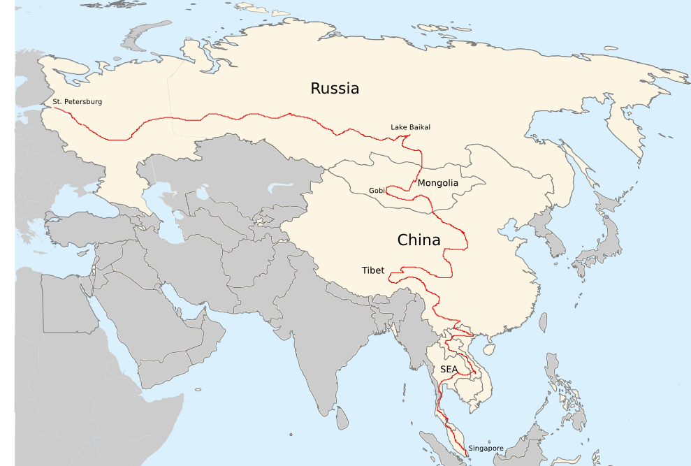

Backpacking
I love backpacking around the world. After completing my dissertation in the spring of 2015, I spent the rest of the year crossing a large part of Asia by land route (that is, only by train, bus, boat, car, and by motorbike - but no flights).

The Route
This trip took me across Russia with the transiberian railway, into the Gobi desert of Mongolia, all across China, into the mountains of Tibet and finally to south east Asia, i.e. Vietnam, Laos, Thailand and Singapore. Check out the map above for a rough indication of my route! I may put some photos online at some point :)
Alan Akbik
Text and Data Mining
IBM Research
akbika [ät] us [dot] ibm [dot] com